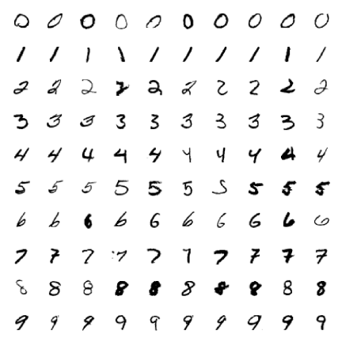
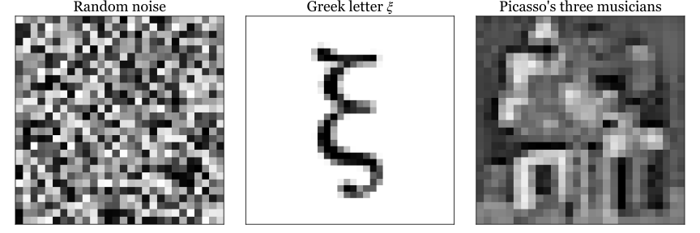
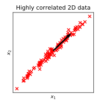

Dimensionality Reduction¶
In classification we looked at different approaches for classifying a set of datapoints as one of mutiple classes each. In several classification applications such as image classification, the number of inputs per datapoint can be very large. For example, the images in the MNIST handwritten digits database are \(28 \times 28\) pixel images, living in a \(784\)-dimensional space of pixel intensities. However, the MNIST images do not populate the whole space homogeneously but rather occupy a smaller subspace: although there is variability within the dataset due to different handwritings, slightly rotated or translated characters and so on, the characters of a given class \((0, 1, 2 ..., 9)\) are somewhat similar to each other:

In addition to images belonging to the same class being similar to each other, some images are never encountered in the dataset and certain parts of this \(784\)-dimensional space are empty. Consider for example the three images below, all of which belong to the same \(784\)-dimensional space as the MNIST characters but are significantly different from them.

To drive the point home with an example which can be visualised, the fourth image shows a \(2\)D dataset in which the points lie mostly along the direction of the arrow, and there is little variability along the direction perpendicular to the arrow.

There are two main issues which arise from this discussion. In some datasets:
Certain directions of low variability may not be particularly informative about the data. For example, we could drop the direction perpendicular to the black arrow in the dataset above and still retain enough information to fit a simpler model to the now \(1\)D dataset. This is an example of data pre-processing to simplify model fitting.
Finding the directions of highest variability, corresponding to the black arrow here, may be a question in itself when trying to determine which features are important or unimportant for describing a particular dataset.
We will discuss these issues further in the the next section on principal component analysis (PCA)